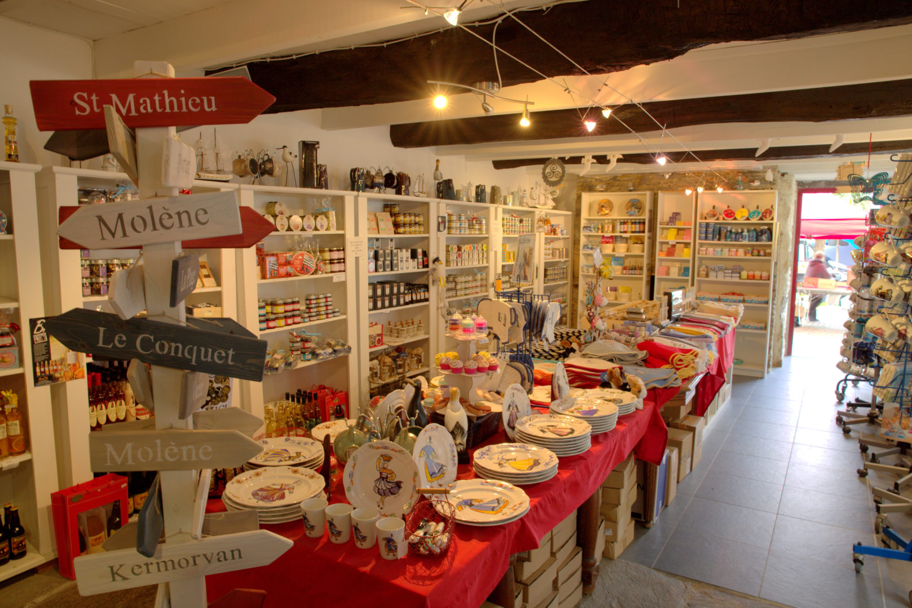

La nouvelle identité du site
Un bout de Bretagne, du bout du monde. Voici les pistes graphiques de la refonte. La piste C, qui garde l'âme du site actuel (vos couleurs, votre logo, le phare et le triskell), a été retenue. Les pistes A et B restent consultables pour comparer.

Piste C — Continuité
L'identité actuelle modernisée : navy, bleus et rouge de la boutique, illustration du phare redessinée, triskell, et l'intérieur du commerce en vedette.
Voir la planche →Voir le site actuel en version C →
Les autres pistes explorées (conservées pour comparaison)
Piste A — Iroise
Une ambiance plus maritime et éditoriale : bleus profonds, blanc écume, accent framboise.
Voir la planche →Piste B — Comptoir
Une ambiance plus artisanale : bordeaux, pierre, ardoise et kraft.
Voir la planche →Document de travail. Ce n'est pas encore le site final. Les photos viennent du site actuel et seront remplacées après un shooting. Les textes et les prix sont des exemples.